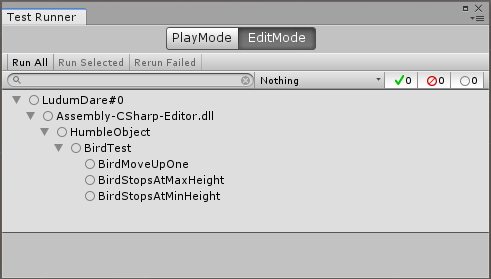

0x00
新坑《游戏编程模式》（作者 Robert Nystrom）。
不过这次要写的这个模式并非来自这本书中，而是 Youtuber Jason Weimann 在视频中介绍的一种可以用来单元测试的设计模式，叫做 Humble Object Pattern。
给同时具备软件条件与硬件条件的小伙伴一个传送门。
在 Unity 下，用 C# 做了简单的实现，传送门：
链接：https://pan.baidu.com/s/1nNTgBZ3mIBL2b7uBopDcmQ
提取码：mz4d
其他模式传送门：
这次的主题突然有了两个，题目中的模式，以及单元测试。
0x01 单元测试
单元测试（Unit Test）又称为模块测试，即针对程序中的最小单位进行的功能测试，在测试中，我们不关心实现方式与代码结构，只关心代码模块是否能够完成所需功能，通过测试。（相较集成测试，在实际嗯嗯环境下是否可用）
通常测试的结构分为三步：1. 初始化模块；2. 调用方法；3. 进行断言。（Arrange; Act; Assert）
要求我们写出可测试的代码，而不是在修改后一次次运行程序，查看行为是否符合预期，或者疯狂打印日志。
但是呢？测试驱动开发（Test-Driven Development，TDD）为了让写出的代码可测试，依然需要一些方法，遵守一些规则。
- 方法和数据源解耦，不依赖于特定的数据获取方式。
- 单一职责原则（Single Responsibility Principle），同时涵盖了职责是否清晰（能否从 API 的名字涵盖其功能）
- 不要依赖可变的全局状态，如果存在多个类似的依赖，将很难预测方法的行为，使得维护变得困难。
- 使用依赖注入]，降低类与类之间的耦合，将依赖项的获取从硬编码，改成了在构造阶段注入依赖项，这样我们就可以在测试时将依赖项传入。
- 单例模式在方法中的使用，使方法产生了副作用（Side Effects），也会影响方法的可测试性。
0x02 Unity 的单元测试
Unity 使用 NUnit 实现了一个内部的单元测试，在编辑器中「Window」-「General」-「Test Runner」打开单元测试测试窗口。

图中是在示例中，进行的单元测试。在 Unity 代码中使用时，需要引用 NUnit.Framework 来使用。测试代码需要加上“[Test]”特性，放在 Editor 目录下即可。
早先在进行异常测试时，使用“[ExpectedException()]”特性，如果在执行测试用例时抛出了指定异常，则通过测试。现在这种异常测试的方法已经被移除了，而是改用 Throws Constraint 这样的构造（NUnit 3.0）。
1 | [Test] |
（较老版本的 Unity 可能无法找到对应动态链接库可以手动将链接库复制到 Unity 工程 Plugins 目录下。与原生 C# 工程不同，Unity 会自动将 Plugins 目录下的动态链接库引用到工程中，在 Unity 的工程中，无法通过右键单击「引用」-「添加新引用」来添加）。
Microsoft.VisualStudio.QualityTools.UnitTestFramework.dll
0x03 Humble Object Pattern
没有找到这个模式的具体描述，但通过 Jason 的描述，主要通过为代码进行界限分离，使其变得可测或更容易移植。
在示例中，我们第一个版本实现了一个控制小球上下移动并带有限位的脚本组件，但是如果我们想对 Move() 方法进行测试，就需要处理此方法对 MonoBehaviour 的依赖，如果在测试时修改了对象的 transform 组件，则会产生副作用。
1 | public class Bird : MonoBehaviour |
简单的通过增加一层抽象，即可将 MonoBehaviour 和移动的逻辑进行分离，抽象的接口中包含了我们所关心的数据。
1 | public interface IBird |
新的 Bird 类继承了接口，将 MonoBehaviour 的 Transform 组件所表示的位置，通过接口中定义的 Vector3 来表示。
1 | public class Bird : MonoBehaviour, IBird |
Move() 方法就可以避免直接对 transform 的引用，而是使用接口中的数据成员。我们定义一个 BirdController 类，用来控制对象的移动。控制类保存着一个符合接口定义的引用，并通过引用来对对象进行移动和限位。
1 | public class BirdController |
最后把分离后的 Bird 类补充完整，首先需要保存自己的控制器的引用，用自己作为控制器的构造函数的参数传入，并在 Update 中对输入进行处理，通过控制器进行移动的处理。
1 | public class Bird : MonoBehaviour, IBird |
到这，我们通过更复杂的方式，实现了我们原本一个脚本几行代码就可以达到的功能。好处当然是前面说的可测性。要对分离出来的控制器 Move() 方法进行测试，只需要实现相应的接口，通过 Unity 提供的单元测试方法来测试即可：
1 | public class MockBird : IBird |
1 | using NUnit.Framework; |
0xff
测试驱动开发从这个小例子中，似乎是进行了过度设计，但这种开发模式可以很有效的在工程达到一定规模时，避免修改一处就要人工检查很多内容。并且为了写出可测试的代码，就要尽可能遵从更多的规则，从这方面考虑我们的代码也会更可靠。
当然有些时候，要写出可测试的代码，也可能是一项挑战。以后都试着挑战一下吧。